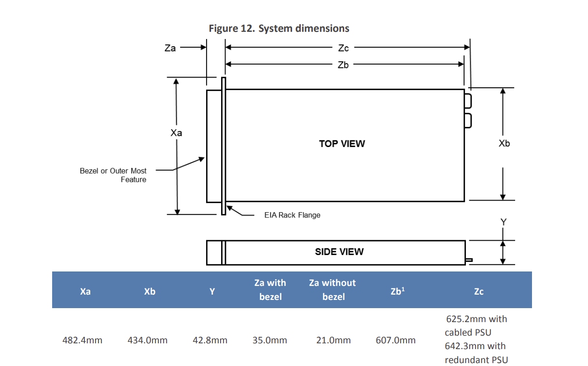
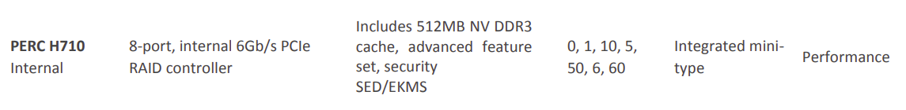
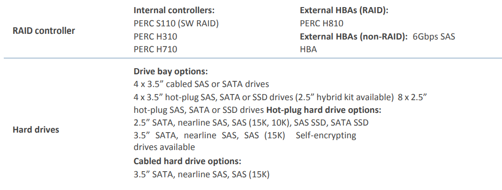
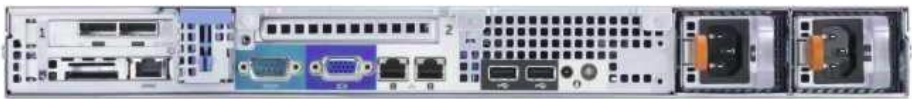

Projecte 13 Servidor
Es proposa la compra d’un servidor d’ebay, Per a fer funcionar els serveis que volem oferir.
En el servidor volem implantar els següents serveis:
Un servidor de disc per a les gravacions de video.
Servidor de pàgines web, per a le xarxa pública.
Servidor de Nextcloud.
- Servei d’espai en el núvol.
- Comunicació entre els membres.
- Serveis ofimàtics col.laboratius.
- Agenda, calendari, integrar noves apps generades per a l’empresa.
- Connectar en enmagtcenament extern per visualitzar o descarregar les gravacions de video.
Maquina virtual per controlar el wifi de la sala.
Tallafocs, DNS, DHCP, VPN (pfSense).
Servidor Ldap per gestionar usuaris Nextcloud i VPN.
13.1 Hardware
Especificacions
server
Documentació del model, i manuals, owner manual Compatibilitat amb ubuntu server, és compatible amb la versió 14 i posteriors. En la fulla de Dell
És compatible amb la versió 14.04 LTS, no apareix en la llista, manté la compatibilitat hardware amb les més recents. És un servidor del 2014, pero per als requisits que requerim, pocs usuaris, tràfic limitat, és suficient. A una mala Posem CentOS
Dimensions servidor 
Cal buscar un rack que done les dimensions.
Discs durs, admet segons documentació 4 SATA 3.5’’ o 8 de 2.5’’ Hot-plug. On fariem RAID per hardware. RAID: Kit RAID H710 Mini 512 MB NV (SAS/ SATA ) - 0/1/5/6/10/50/60  Caddies: 4 LFF (3.5”) incluidos
 Recomane SEAGATE Barracuda ST4000DM004 4000GB 3.5 Serial ATA III amazon amazon usa
Farien falta 3 per a fer Raid, estaria bé tindre un de reserva per si falla un disc, i regenerar el Raid. Si en compren 4, es pot fer un Raid 6 que té dos de paritat.
Tindríem dos discs de 4 TB, que serien 8Gb d'espai efectiu i un de paritat.RAM: RAM registrada DDR3 de 64 GB. No és la més rapida del mercat, pero suficient per al que necessitem:
- pfSense Min 1GB (imatge oficial), 2GB
- Servidor HD video 4 GB, si sobra, posar un poc mes, estudiar les demandes de 3 càmeres ip.
- Nextcloud Min 2GB, recomenat + 8GB
- Ldap, web server, antenes wifi, Collabora office server, algun altre servei futur, si es vol mail intern … (he de pensar si fer una altra VM o repartir en vaires) 4GB.
UPC: 1x Intel Xeon E5-2440 V2: 8 núcleos, 16 subprocesos, 1,90 GHz (aumento de 2,40 GHz, caché de 20 MB, TDP de 95 W)
Segons la informació del venedor. > Bisel: No incluido Rieles: Rieles no incluidos Factor de forma: Montaje en rack 1U
Parte trasera: 1 puerto RJ-45, Preguntar si no es uno doble. En la documentacio oficial, la serie porta I/O adapter options 1Gb Ethernet: Broadcom 5720 Dual Port 1Gb NIC The Broadcom 5720 is a 14th generation 10/100/1000Base-T Ethernet LAN controller Broadcom 5720 2x1Gb Base-T 
2 fonts d’alimentació redundants. Fuente de alimentación: 2 fuentes de alimentación intercambiables en caliente de Dell Platinum efficiency 350W or 550W power supply
Dell OpenManage Systems Management OpenManage Essentials
Acustica, sobre 30db. El posarem en una habitació fora de l’oficina i la sala. No sera problema.